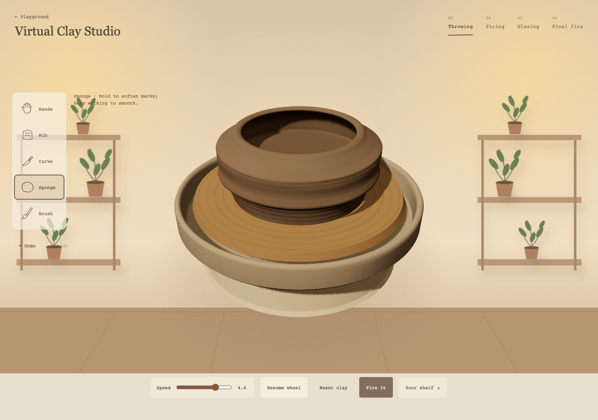
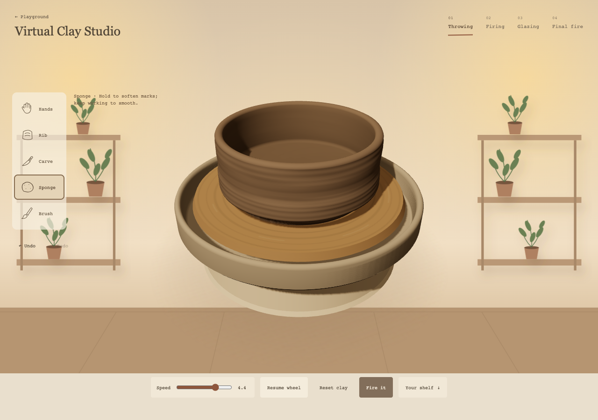
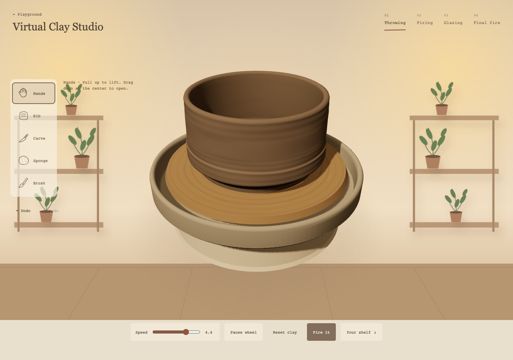
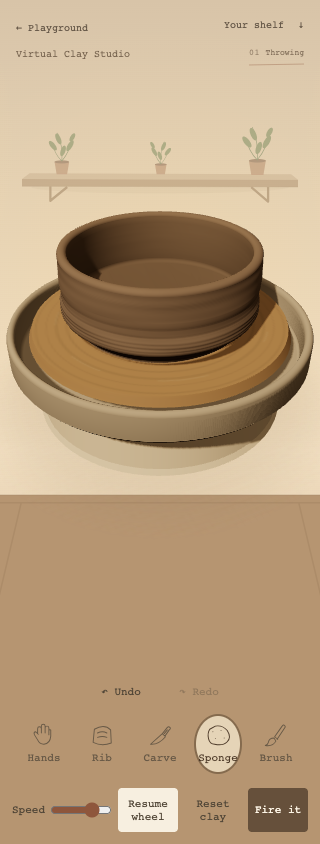
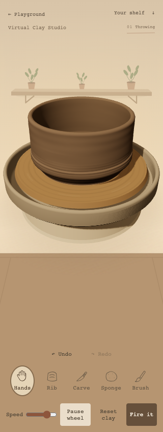
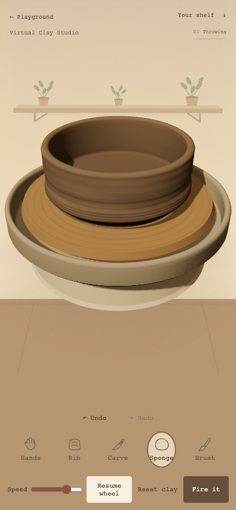
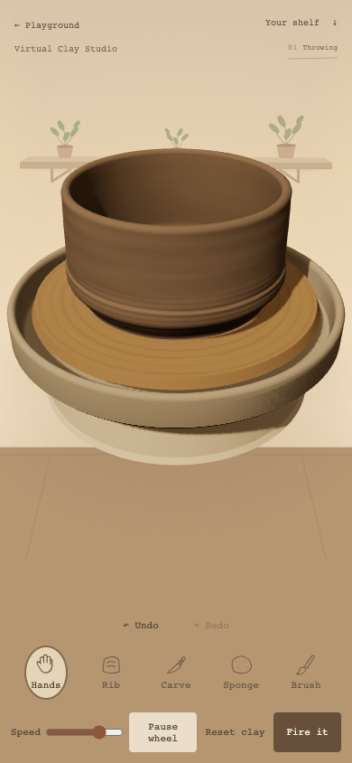
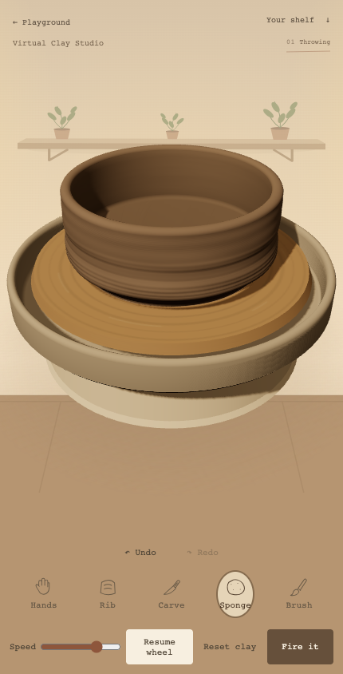
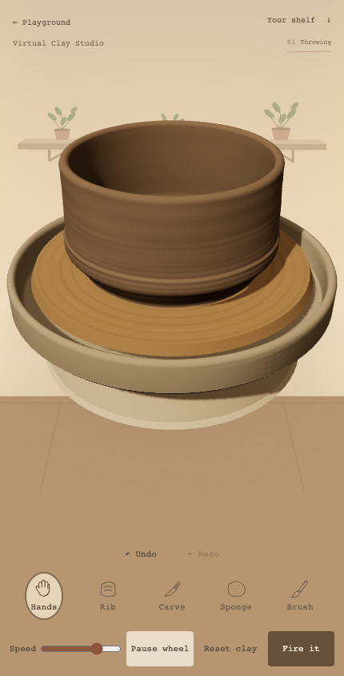

Local prototype. Actual keyboard shaping plus pointer opening on desktop; touch-event opening/pulling on320/390/430px phone layouts with4× CPU throttling. Read-only projection helpers find contact points; no direct shape mutation or preset bowl.



After preparing the low/wide lump, two downward gestures open/deepen it and three outward gestures widen it. One upward inside gesture raises the cylinder. Undo restores the bowl. Initial low/wide preparation still uses keyboard controls in this test; this is not a first-time-user or all-touch usability study.






Eight regression suites passed, including all three clay weights, supported walls/floor, deep opening and stable height. No browser errors in these attempts. Real-device GPU/thermal performance and novice usability remain unverified.
Performance limitation: the390px4×CPU held-Sponge sample measured16.7ms median but150ms p95. Intermittent slow geometry updates need profiling before release; stable shape does not mean stutter-free interaction.